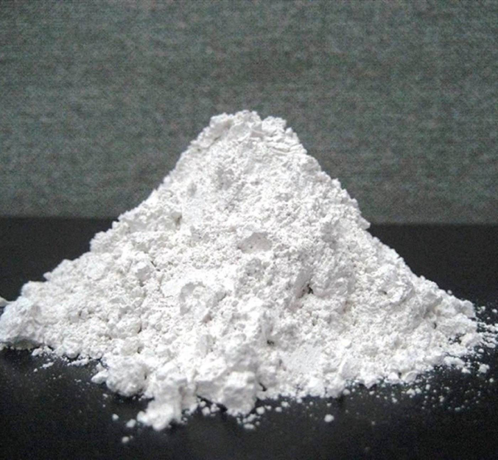

Limestone Powder for Glass Manufacturing: CaO Purity and Fe₂O₃ Requirements
Limestone powder is a primary raw material in glass batch — providing the CaO that gives glass its chemical durability, hardness, and resistance to devitrification. But not every grade of limestone powder qualifies for glass use. This guide covers the critical specifications: purity, iron content, particle size, and how to select the right grade for float glass, container glass, and specialty glass applications.

Glass-Grade Limestone: Key Specs
- CaCO₃ purity: 95–98% minimum
- Fe₂O₃: below 0.05% for clear glass
- Particle size: 100–300 mesh
- MgO: below 3% for most glass types
- Moisture: below 0.5%
The Role of Limestone in Glass Composition
Standard soda-lime glass — the glass used in flat panels, bottles, jars, and automotive windshields — has a composition of approximately:
- SiO₂ (silica): 68–73% — from silica sand
- Na₂O (soda): 12–16% — from soda ash
- CaO (lime): 8–12% — from limestone powder
- MgO (magnesia): 0–5% — from dolomite
- Al₂O₃ (alumina): 0–3% — from feldspar or alumina
Limestone's contribution — CaO at 8–12% — is not optional. Calcium oxide is what makes glass chemically durable, hard, and resistant to devitrification (uncontrolled crystallisation during cooling). Without adequate CaO, glass becomes soft, readily attacked by moisture and acids, and difficult to form on float lines or in moulding.
When limestone powder enters the furnace, CaCO₃ decomposes at approximately 840–900°C:
CaCO₃ → CaO + CO₂
The resulting CaO then participates in glass network formation as a flux and stabiliser. CO₂ is released as a furnace gas — this calcination is why limestone and calcite are not interchangeable with pre-calcined lime in batch design without recipe adjustment.
Critical Specification: Iron Content (Fe₂O₃)
Iron is the most consequential impurity in glass-grade limestone. Even small quantities of Fe₂O₃ cause visible colour in the finished glass:
| Glass Type | Fe₂O₃ Limit in Limestone | Reason |
|---|---|---|
| Clear float glass (architectural, solar) | <0.05% | Maximum optical clarity; iron causes green edge tint |
| Colourless container glass (flint) | <0.05–0.08% | Cosmetic clarity for food/pharma packaging |
| Green / amber container glass | <0.10–0.15% | Colour is intentional; Fe₂O₃ contributes to colour |
| Fiberglass (E-glass / insulation) | <0.20% | Colour less critical; strength and electrical properties are primary |
| Opaque/coloured specialty glass | Up to 0.30% | Colour/opacity control more important than iron level |
Standard limestone from most quarries in India has Fe₂O₃ in the 0.10–0.50% range. For clear glass applications, this requires selective sourcing from low-iron ore deposits. Rajasthan calcite deposits typically have lower iron content than many Indian limestone sources, making them better candidates for glass-grade supply.
CaCO₃ Purity and CaO Equivalent
Glass batch is typically formulated on an oxide basis (CaO %). To calculate the required limestone input from a given CaCO₃ purity grade:
CaO % = CaCO₃ % × (56.08 / 100.09) ≈ CaCO₃ % × 0.56
| CaCO₃ Purity | CaO Equivalent (on calcination) | Acid Insoluble (impurities) |
|---|---|---|
| 95% | ~53.3% | ~5% (SiO₂, Al₂O₃, etc.) |
| 97% | ~54.4% | ~3% |
| 98% | ~55% | ~2% |
| 98.5% | ~55.2% | ~1.5% |
Higher purity means less acid-insoluble material (SiO₂, Al₂O₃) introduced into the batch. In a tightly optimised glass formula, impurities from each raw material must be tracked — a 5% acid-insoluble in limestone at 200 kg/tonne of glass means 10 kg of uncontrolled SiO₂/Al₂O₃ per tonne of glass, which can alter the formulation balance.
Particle Size: Why It Matters in Glass Batch
Limestone powder for glass batch is typically specified at 100–300 mesh (150–50 microns). Particle size affects:
- Batch homogeneity: Mismatched particle sizes between silica sand (coarser, 300–600 micron typically) and limestone (finer) can cause segregation during transport, storage, and charging — leading to glass compositional variation
- Melting rate: Finer limestone dissolves faster in the glass melt, reducing furnace energy requirement and unmelted batch carryover (stones and cords)
- Dust and handling: Very fine powder (above 300 mesh) creates dust management challenges in batch houses and affects dosing accuracy via pneumatic or conveyor systems
The practical sweet spot for most continuous glass furnaces is 150–200 mesh (75–100 micron). This balances reactivity, handling, and mixing consistency.
Limestone vs Dolomite in Glass Batch
Both limestone and dolomite are used in glass batch and serve related but distinct functions:
| Parameter | Limestone (CaCO₃) | Dolomite (CaMg(CO₃)₂) |
|---|---|---|
| Oxide introduced | CaO only | CaO + MgO |
| CaO content | ~55% (after calcination) | ~30% CaO + ~21% MgO |
| Use in glass formula | Primary CaO source | Used when MgO is required |
| Effect on glass | Durability, hardness | Reduces viscosity at forming temp, reduces devitrification |
| Typical use | All glass types | Float glass, container glass (partial replacement) |
Most float glass formulas use a combination: limestone for the bulk CaO, and dolomite at 5–15% of batch to introduce MgO. Pure limestone alone in float glass can lead to devitrification issues during the annealing process. See our calcite vs dolomite vs limestone comparison for a full breakdown of the chemistry.
Glass Industry Segments in India — Limestone Demand
India's glass industry is one of the significant consumers of limestone powder, with several distinct segments:
Flat/Float Glass
Used in construction (windows, facades), automotive (windshields), and solar panels. Float glass plants run continuously with large limestone volumes. The strict Fe₂O₃ requirement (<0.05%) for clear architectural and solar glass makes sourcing selection critical.
Container Glass (Bottles and Jars)
India's food, beverage, and pharmaceutical sectors drive container glass demand. Colourless (flint) bottles require low-iron limestone; green and amber bottles have relaxed iron limits. Rajasthan is geographically well-positioned to supply container glass plants in North and West India.
Fiberglass
E-glass (electrical insulation) and reinforcement fiber use limestone alongside borosilicate-modifying minerals. Iron limit is less strict than clear glass, but CaCO₃ purity and consistent PSD remain important for uniform fiber formation.
Specialty Glass
Laboratory glassware, bulbs, and technical glass have varying compositional requirements. Limestone here is often a minor ingredient compared to silica and boron sources, but purity and consistency requirements are high.
Full Chemical Analysis Required for Glass-Grade Supply
Standard limestone COAs report CaCO₃ %, mesh, brightness, and moisture. Glass applications require an expanded analysis. A proper glass-grade COA should include:
- CaCO₃ % (or equivalent CaO %) — primary specification
- Fe₂O₃ % — must be reported; most critical impurity for colour
- SiO₂ % (acid insoluble or total) — affects batch balance
- Al₂O₃ % — affects viscosity and glass properties
- MgO % — distinguishes high-dolomite from pure limestone sources
- Mn₂O₃ % — trace manganese also causes glass colouration
- Particle size distribution (D10, D50, D90) — not just mesh designation
- Moisture %
Requesting this full panel before approving a supplier prevents reformulation problems downstream. A supplier who cannot provide Fe₂O₃ data is not suitable for clear glass supply.
How Shikhar Microns Supports Glass Industry Procurement
Shikhar Microns supplies limestone powder from high-purity Rajasthan deposits with full chemical analysis available on request. For glass industry enquiries:
- We provide CaCO₃ %, Fe₂O₃ %, SiO₂ %, MgO %, Al₂O₃ %, and moisture on every COA for glass-grade orders
- Low-iron grades from Alwar/Makrana sourced from deposits with naturally low Fe₂O₃ are available for clear glass applications
- Particle size is confirmed at 100–300 mesh with D50 and D90 data available on request
- Multi-batch samples available for batch trial and furnace qualification before commercial supply
Verify Fe₂O₃ Before Approving Any Glass-Grade Limestone
Do not accept a limestone sample for glass use without an independently verified Fe₂O₃ value. Request it explicitly on your purchase specification and verify it on every COA. A single high-iron batch can cause glass colour shifts that are difficult to diagnose if Fe₂O₃ is not routinely tracked.
Frequently Asked Questions
Need Glass-Grade Limestone Powder from Rajasthan?
Shikhar Microns supplies high-purity limestone powder (95%+ CaCO₃) with full chemical analysis — Fe₂O₃, SiO₂, MgO, and PSD — for glass batch applications. Request samples and COA data before committing to commercial volumes.
Request Sample & Specifications